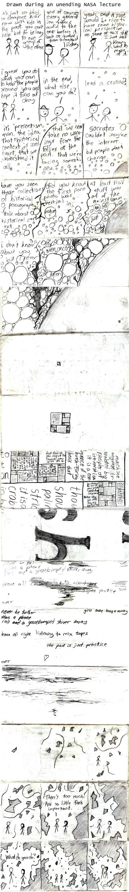

Godel, Escher, Kurt Halsey

Permanent link to this comic: https://xkcd.com/24/
Image URL (for hotlinking/embedding): https://imgs.xkcd.com/comics/godel_escher_kurthalsey.jpg
Drawn during an unending NASA lecture.
[[Two people are talking, one in a hat.]]
Hatless: it's just so hard to compare kids now with kids in the past. you can't help but to belong to one group or the other.
Hatless: and of course every generation seems awful to the one before it. look at quotes from throughout history.
Hatted: yeah, and it sure would be nice to have some perspective on some of this stuff. I just don't know what to make of it.
[[Circles are appearing--maybe snow?]]
Hatless: i guess you do what you can to help the people around you and hope it turns out okay.
Hatless: in the end, what else can you do?
Hatted: lead a crusade?
[[We can no longer see the people, just the circles.]]
it's presentism, man. the idea that historical context is irrelevant, that we understand it all
that we need take no warnings from the follies of the past. that we're facing something new.
socrates couldn't imagine the internet. but people don't change.
[[We can start to see the corner of a darker circle in the lower right.]]
((The borders between the three panels on this line are cracking.))
have you seen those collections of historical pornography? talk about historical context.
did you know the first porn photo was bestial in [[inside a circle:]] nature?
at least that stuff was out of the mainstream [[each word in one circle:]] no just in history
((the three panels have merged into one on each row.))
i don't know about you, but [[circled]] I [[uncircled]] never
even once seen
[[The circles are highly variable in size now, and pressed up against a larger one on the right side.]]
[[There is mass of circles of different sizes, with some dark fissures in between, against the side of a large circle which we can see part of in the right half of the panel. They look like cells. There's a tiny square in the center of the giant cell.]]
[[We see only the tiny square, centered. It has a few marks inside it.]]
[[Closer, the square is divided into rectangles of different sizes, each of which has text in it.]]
[[Much closer, we can see fragments of the text. Some are sideways, some are cut off, some are too small to read.]]
machine language translated by principles of isomorphism it is a consequence of the Church-Turing thesis that ...
but how do you select the channel you wish to se-
thou ... shou ... palin ... stri ... it is a ... crab ...
[[Closer still, we can just see a huge sideways s and h.]]
[[Those letters are faded and mixed with a faded version of the next panel.]]
girls take boys away ...
never be further than a phone call and a goosebumped shiver away ...
drove all night listening to mix tapes ...
the past is just practice
[[There is a heart at the bottom and, in the lower left, the name Kurt.]]
[[The same as the previous panel, but with the words blurred out to scribbles.]]
[[Jagged, shaded shapes and strands start to fall. Faint panel borders appear again. There is a person on the far right.]]
((Back to three panels per row.))
[[A man and woman are standing amid the fragments.]]
Man: There's too much. And so little feels important.
[[The jagged edge of the shaded area is encroaching on the sides of the panel.]]
What do you do?
[[We see them from farther away through a rough hole in the shaded area. Bits continue to fall around them.]]
[[She takes his hand.]]
{{Title text: I love the idea here, though of course it's not a great-quality drawing or scan.}}
 A webcomic of romance,
A webcomic of romance,